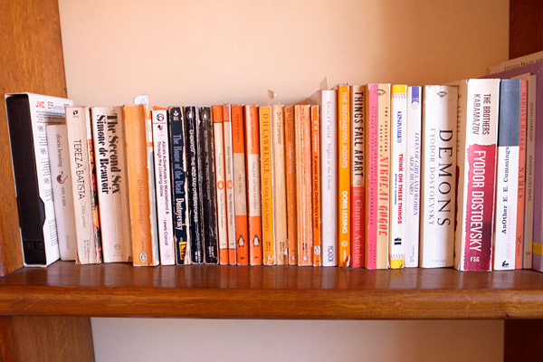

My Year in Reading, 2011
Even though The Millions didn’t ask my opinion about the books I’ve read this year, I’ve decided to post about it anyway. Because this past year has been filled with so many literary discoveries that I am bursting with them. Many of the authors I’ve read recently have lived at some point during the last fifty years, which is a great move forward for me, finally crossing the long bridge into the contemporary.

For the first half of the year I took a healthy dip into impressions of Rome: some Roman Empire historical fiction, like John Williams’ Augustus and Marguerite Yourcenar’s Memoirs of Hadrian, and Goethe’s travelogue, Italian Journey. The second half brought me face to face with Dorothy Allison, Alice Munro, Haruki Murakami, Angela Carter and Irène Némirovsky for the first time. And lately I have been eating and drinking John Cheever’s short stories and the biography Cheever by Blake Bailey.
Add to these spectacular writers, two books that I can’t get out of my head, Embassytown by China Miéville and In a Strange Room by Damon Galgut. Add to this, two greatly informative art history books: The Story of Art by E.H. Gombrich and Classical Art: From Greece to Rome by Mary Beard. And add to it the world of literary magazines that I’ve discovered, albeit over an ocean. And it’s impossible to choose a book that moved me most. In fact, instead of a “year of reading” this year has been one of multiple introductions that will carry me over into the next year and probably the next.
Here’s five, in no particular order of favoritism:
- The Wind-Up Bird Chronicle by Haruki Murakami: Because many readers’ favorite this year is 1Q84. But also because coming across Murakami for the first time was like being shown, again, the vast potential of the novel.
- The Infernal Desire Machines of Doctor Hoffman by Angela Carter: Ditto on Carter. Reading The Infernal Desire Machines was exciting, like peeling back a mind’s subconscious layers and seeing that reality is so much more variable, fantastic, imaginative than what it seems. This is a book that requires re-readings.
- In a Strange Room by Damon Galgut: This is a book I loved for the sheer beauty of it. Everything about it was beautiful, the prose, the nomadic setting, the characters and the ideas it explored. It is a traveler’s account that gets to the very gut of what it feels like to be a traveler. It is a book that I wish I could write.
- The Story of Art by E.H. Gombrich: This will be one of those books that I’ll always be struggling to refer back to in my mind. It has provided me with an outline on a subject I knew almost nothing about and built a base upon which I’ll further pursue my favorite periods of art.
- The Stories of John Cheever : Even though I’m not done, and who could finish this book over the course of a year, I’ve finished many stories that have already impacted me deeply. But if you’ve been reading my posts lately, you already know that.
And how was your year of reading? Any great books?
Commentary for My Year in Reading, 2011
Ciao Carolyn! I loved The Shipping News when I read it way back in high school, already. Then I read Accordian Crimes. Each bring to mind a strong atmosphere that I still remember. I don’t know how you can read books about food, I think I would always be hungry or, I would have to read in the kitchen! Merry Christmas!
I can’t believe this, but I didn’t finish a single book all year. Lots of parts, though. I mainly picked over my own bookshelves. I have quite a few books with little pieces of paper sticking out the tops (kind of like your picture). Right now I’m part-way through Handwriting in America by Tamara Thornton. Pretty interesting, really. I had no idea that different styles, or “hands,” were so tied to social class in the past. Doing my best to finish it before I have to return it. Happy new year to you guys.
Amber, I read Tropic of Capricorn by Henry Miller after reading your comments and it is my second favourite book I read this year. So thank you.
My favourite book that I read in 2011 was Down These Mean Streets by Piri Thomas. The author actually passed away in October, that’s how I first heard of him.
Down These Mean Streets is an autobiographical tale of a Latino-Caribbean boy growing up in the brutal world of Spanish Harlem, New York. It deals so poignantly and realistically with family strife, as well as love, gang membership and, the harrowing description of prison and drug addiction life.
It really is a marvellously honest and defiant book which I really recommend for all. Astonishingly, it is out of print in the UK.
Mike, Sounds like an interesting year of reading! Maybe reading lots of bites of books let you piece together your own narrative.
Sambo, It’s great that you enjoyed Tropic of Capricorn. I haven’t read it in over five years. It can be pretty gritty, like all of Miller’s work! And thanks for pointing me to Piri Thomas. I’ve put him on the list of authors to keep an eye out for, a list that never stops growing.
· · · · · · · · · · · · · · · · · · · ·
1 On Friday 23 December 2011 Carolyn wrote:
Ooh, I’ll have to check some of these out! I can’t remember all that I read, and I haven’t read much in the past few months. : ( I hope to remedy that in 2012. But one of my favs was an anthology of food writing from the New Yorker, some of the articles went back as far as 1930. It broadened my spectrum of food writing and how its more about an experience and a feeling than anything else. The other one that sticks out is Blood, Bones and Butter. It’s a memoir of a lady chef, her journey of searching for a purpose in her life. Usually those books aren’t all that well written but this was an exception. She has a really beautiful, descriptive, meandering style. Right now I’m reading The Shipping News. It’s a totally different writing style than my own, very sparse and stark. It’s taken me a while to get into it but I’m rather enjoying it now. Kisses to you and merry Christmas!